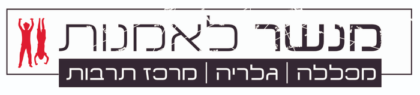

לפי יום
לפי שעה
מאיפה סרקו
פעילות אחרונה
הנתונים נאספים מ־ntfy, ששומר היסטוריה של כ־12 שעות. הדף שומר כל מה שהוא רואה במכשיר הזה, אז כדאי לפתוח אותו לפחות פעם ביום כדי שלא ילכו נתונים לאיבוד. סריקות לפני 24.11 בערב נספרות רק לפי ההתראות שנשלחו.

מחסן ציוד · שלט הקריאההנתונים נאספים מ־ntfy, ששומר היסטוריה של כ־12 שעות. הדף שומר כל מה שהוא רואה במכשיר הזה, אז כדאי לפתוח אותו לפחות פעם ביום כדי שלא ילכו נתונים לאיבוד. סריקות לפני 24.11 בערב נספרות רק לפי ההתראות שנשלחו.